방송통신기사 (2007-03-04 기출문제)
1과목: 디지털 전자회로
1. 다음 중 수신기에서 포스터-실리형 검파기와 관련 있는 것은?
- AM(진폭변조)
- FM(주파수변조)
- DM(델타변조)
- PCM(펄스부호변조)
(정답률: 알수없음)

2. 그림과 같은 기본 발진회로에서 증폭기 A의 전압이득이 50 일 때, 귀환회로 β의 크기는 얼마인가?
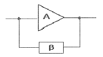
- 0.01
- 0.02
- 0.⑤
- 0.1
(정답률: 알수없음)
3. 다음 회로의 입력에 정현파가 인가될 경우 이 회로의 설명으로 옳은 것은?
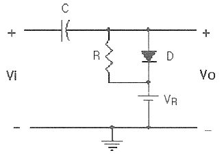
- 클램프회로이다.
- 출력신호의 하단레벨을 일정하게 유지한다.
- 반파정류회로이다.
- 클리퍼회로이며 출력신호의 크기를 제한한다.
(정답률: 알수없음)
4. 출력이 140W 되는 반송파를 단일 주파수로 30% 변조 하였을 때 AM 상측파의 전력은 몇 W 인가?
- 3.15
- 6.34
- 73.15
- 146.3
(정답률: 알수없음)
5. ECL(Emitter Coupled Logic)회로의 설명으로 틀린 것은?
- 회로의 출력은 각 각 OR, NAND 출력이 된다.
- TTL에 비해 동작속도가 일반적으로 빠르다.
- TTL에 비해 소비전력이 일반적으로 크다.
- 기본회로의 구성은 차동증폭기로 이루어진다.
(정답률: 알수없음)
6. 다음 중 카르노도를 간략화한 논리식은?
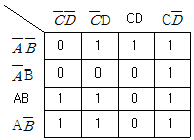
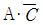
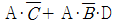
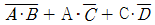
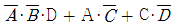
(정답률: 알수없음)
7. 다음 논리회로와 같은 게이트(Gate) 회로에 해당되는 것은? (단, A, B는 입력단자 X는 출력단자이다.)
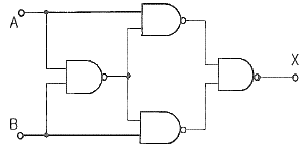
- AND
- NOR
- OR
- Exclusive OR
(정답률: 알수없음)
8. 다음 중 다양한 논리 시스템을 설계할 수 있는 범용 논리 게이트(universal gate)에 해당하는 것은?
- AND 게이트
- OR 게이트
- NOR 게이트
- Exclusive OR 게이트
(정답률: 알수없음)
9. 차동증폭기에서 차동신호에 대한 전압이득은 Ad 이고 동상신호에 대한 전압이득은 Ac 이다. 이 때 동상신호 제거비(CMRR)를 옳게 나타낸 것은?
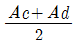
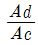
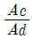
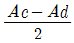
(정답률: 알수없음)
10. 그림과 같은 증폭회로의 이미터와 접지사이에 저항 Re를 삽입 할 경우 이에 대한 설명으로 옳은 것은? (단, TR은 NPN형)
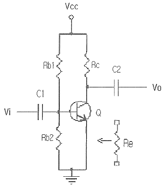
- 출력임피던스는 감소한다.
- 이득이 증가하고 일그러짐이 커진다.
- 입력임피던스와 이득이 모두 감소한다.
- 입력임피던스와 출력임피던스가 모두 커진다.
(정답률: 알수없음)
11. 회로에서 C에 해당되는 커패시터를 제거할 경우 이에 대한 설명으로 옳은 것은? (단, TR은 NPN형)
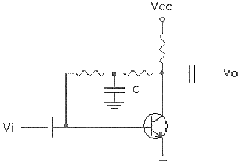
- 이득이 증가한다.
- 이득이 감소한다.
- 이득의 변동은 없다.
- 회로가 발진한다.
(정답률: 알수없음)
12. 다음 회로와 같은 동작 기능을 갖는 플립플롭은? (단, 회로에서 접지는 생략되어 있음)
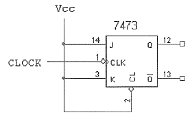
- SR
- JK
- T
- D
(정답률: 알수없음)
13. 다음 중 연산증폭기를 사용한 아날로그 계산기에서 미분기보다 적분기를 주로 사용하는 가장 큰 이유는?
- 적분기의 회로가 간단하기 때문이다.
- 적분기는 비선형이기 때문이다.
- 적분기의 계산속도가 빠르기 때문이다.
- 적분기의 잡음특성이 좋기 때문이다.
(정답률: 알수없음)
14. 다음 중 B급 푸시풀(push-pull)증폭기의 특성과 가장 밀접한 것은?
- 하울링(howling)
- 험(hum)
- 크로스오버(crossover) 왜곡
- 기생진동(parasitic oscillation)
(정답률: 알수없음)
15. 부궤환 증폭회로에서 대역폭이 3배로 넓어지면 이득은 어떻게 되는가?
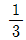
로 줄어든다.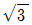
배로 늘어난다.- 3배로 늘어난다.
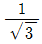
로 줄어든다.
(정답률: 알수없음)
16. 중심 주파수가 455kHz 이고 대역폭이 8kHz가 되는 단동조 회로가 있다. 이 회로의 Q는 약 얼마인가?
- 14
- 26
- 29
- 57
(정답률: 알수없음)
17. 다음 논리식 중 등식이 성립되지 않는 것은?
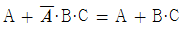
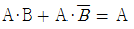
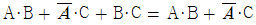
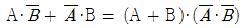
(정답률: 알수없음)
18. 그림과 같은 회로에서 출력측에 정전압을 유지할 수 있는 입력전압(Vi)의 범위는 몇 V인가? (단, 제너 다이오드는 20V 용이고, 최대전류는 50mA)
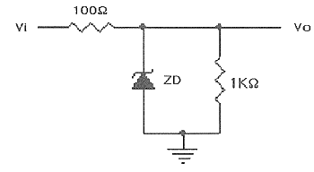
- 15~20
- 22~27
- 28~32
- 35~40
(정답률: 알수없음)
19. 10진수 4에 해당하는 그레이코드(gray code)는 얼마인가?
- 0100
- 0111
- 1000
- 0110
(정답률: 알수없음)
20. 다음 중 NOR 게이트로 구성된 R-S 플립플롭에 대한 설명으로 틀린 것은?
- S = R = 0 이면 상태 변화가 없고 처음의 상태를 유지한다.
- S = 0, R = 1 일 때, Qn = 0 이면 변화가 없고 Qn = 1 이면 Qn+1 = 0 으로 된다.
- S = 1, R = 1 일 때, Qn = 0 이면 Qn+1 = 1 로 되고 Qn = 1 이면 변화가 없다.
- S = 1, R = 0 일 때, Qn = 0 이면 1로 되고 Qn = 1 이면 Qn+1은 변화가 없다.
(정답률: 알수없음)
2과목: 방송통신 기기
21. 지상파 방송에 비해 위성방송의 상대적인 장점이 아닌 것은?
- 넓은 지역에 서비스 할 수 있다.
- 이동통신 등 새로운 서비스에 적합하다.
- 고품질의 광대역 통신이 가능하다.
- 초기 구축비용 및 고장수리비용이 절감된다.
(정답률: 알수없음)
22. CATV에서 헤드엔드로부터 송출된 신호를 서비스 구역전역에 전송하기 위한 전송로를 무엇이라고 하는가?
- 간선(Trunk Line)
- 분배선(Feeder Line)
- 인입선(Drop Line)
- 가입자선(Subscr Line)
(정답률: 알수없음)
23. 앰프 등 비직선성에 의하여 입력신호의 주파수 이외에 불필요한 정수배 주파수의 신호가 발생되는 것은?
- 고조파 왜곡(harminic distortion)
- 저주파 왜곡(audio distortion)
- 고주파 왜곡(radio frequency distortion)
- 고조파 발진(harminic oscillation)
(정답률: 알수없음)
24. TV송신의 음성부분이나 또는 FM 송신기에서 변조파는 높은 성분의 신호일수록 잡음(noise)성분이 증가하여 신호대잡음비(S/N)가 열화되기 때문에 송신측에서 고역성분을 강조하여 송신하는 회로는?
- De-dmphasis
- Pre-dmphasis
- Signal-dmphasis
- FM-dmphasis
(정답률: 알수없음)
25. 다음 중 영상계통의 제반 특성을 직접 측정하는 측정기가 아닌 것은?
- 파형 측정기(Waveform Monitor)
- 벡터스코프(Vectorscope)
- 측파대 분석기(Spectrum Analyzer)
- 신호발생기(Signal Generator)
(정답률: 알수없음)
26. 방송 증폭기의 전압 증폭도가 10dB 와 30 dB 인 증폭기를 직렬로 연결했을 때 출력전압은 입력전압의 몇 배인가?
- 10
- 100
- 1000
- 10000
(정답률: 30%)
27. 컬러TV 프로그램 제작과정에서 컬러화질의 감시에 사용되는 것으로 색 맞추기(색조 조정), 화이트 밸런스 조정 또는 조명 세트, 의상 분장 등을 종합한 색채 설계 및 효과의 확인에 사용되는 장비는?
- 파형 모니터
- 벡터스코프
- 컬러마스터 모니터
- 조도계
(정답률: 알수없음)
28. 컬러 TV방송 방식 중 PAL 방식의 설명으로 가장 타당한 것은?
- 프랑스에서 개발하여 주로 동유럽에서 채택하고 있다.
- 휘도신호에다 두 개의 색차신호(I, Q신호)를 3.58MHz의 색부반송파에 실어 전송하는 방식이다.
- 두 개의 색차신호 중 하나의 위상을 주사선마다 180도씩 반전시켜 전송하는 방식이다.
- 두 개의 색차신호를 동시에 전송하지 않고 각 주사선 마다 순차적으로 교체하면서 색부반송파를 주파수변조하며 전송하는 방식이다.
(정답률: 알수없음)
29. 다음 중 각종 영상신호의 소스와 모니터에 사용하여 On air 중임을 알려주는 것은?
- 타리시스템(Tally system)
- Border line generator
- 문자슈퍼장치
- 셀프 키
(정답률: 알수없음)
30. Color TV방송의 수평 동기펄스의 백 포치부에 송신측의 색부반송파 위상과 수상기에서 재생하는 3.58MHz 색부반송파의 위상을 일치시키기 위하여 삽입하는 8~12 사이클의 신호의 명칭은?
- 컬러 버스트
- 색부 반송파
- 수평동기
- 수직동기
(정답률: 알수없음)
31. 동기발생기(Sync generator)에서 제공되는 주요 신호가 아닌 것은?
- 구동펄스(drive pulse)
- 블랭킹 펄스(blanking pulse)
- 동기 펄스(sync pulse)
- 빔 펄스(beam pulse)
(정답률: 알수없음)
32. 영상신호를 디지털 신호로 변환시켜 화면의 확대·축소, 모자이크, 회전 등 각종 영상효과를 발생시키는 것은?
- DVE(Digital Video Effect)
- DVD(Digital Video Display)
- DVA(Digital Video Amplifier)
- DAD(Digital Audio Display)
(정답률: 알수없음)
33. 위성방송(DBS)을 수신하기 위해서 TV 세트와 연결하는 다기능 방송수신 장치는?
- Time Base Corrector
- Set-Top-Box
- CIN Diplexer
- Yagi Antenna
(정답률: 알수없음)
34. CATV에 대한 설명 중 틀린 것은?
- 전송로는 동축케이블이나 광케이블을 주로 사용한다.
- 전송망의 구성은 성형망(star network)으로 구성되어 있으며 단일방향 통신 방식이다.
- 단일 케이블로 수십 채널의 TV 프로그램을 전송할 수 있다.
- 지상파 TV방송의 국지적 난시청 해소를 위하여 설치했던 지역 공동안테나 TV(Community Antenna TV)가 발전한 것이다.
(정답률: 알수없음)
35. 다음 중 비월주사를 일정하게 하기 위해 수직동기신호의 전후에 배치하는 것은?
- 등화 펄스
- 귀선 소거펄스
- 블랭킹 펄스
- 수평동기신호
(정답률: 알수없음)
36. NTSC 컬러 TV방식의 매초 당 전송하는 프레임 수와 1개 프레임을 구성하는 주사선 수는?
- 60프레임, 525라인
- 30프레임, 525라인
- 50프레임, 625라인
- 25프레임, 625라인
(정답률: 알수없음)
37. 적도상의 약 36000km 상공의 위성으로 지구의 자전주기와 위성의 공전주기를 같게 하여 적도상에 동일한 간격으로 3개를 배치하여 전세계를 커버할 수 있는 경제적인 위성통신 방식은?
- 정지 위성방식
- RANDOM 위성방식
- 위상 위성방식
- 저궤도 위성방식
(정답률: 알수없음)
38. 다음 중 소리의 회절을 가장 올바르게 설명한 것은?
- 주파수가 조금 다른 두 소리가 겹쳐졌을 때, 두 소리가 서로 간섭하여 또 다른 주파수를 발생하며 주기적으로 강약을 되풀이하는 현상
- 파동원과 관측자가 상대적으로 운동할 때 진동수가 정지해 있을 때와 다르게 관측되는 현상
- 음파 진행 시 물체가 진행방향을 가로 막고 있어도 물체의 크기에 비해 파장이 길수록 그 물체의 후면으로 전달되는 현상
- 어떤 물체에 음파가 부딪쳤다가 되돌아 오거나 진행 방향이 변하는 현상
(정답률: 알수없음)
39. 오디오 콘솔의 기능 중 어떤 임계치 이상의 진폭을 설정한 비율로 진폭을 억제하는 것은?
- preamplifier
- noise gate
- fader
- compressor
(정답률: 알수없음)
40. TV 방송전파를 이용하여 TV 방송과 함께 문자 또는 도형 형태의 서비스를 제공하는 미디어는?
- 텔리텍스
- 텔리텍스트
- 비디오텍스
- 정지화방송
(정답률: 알수없음)
3과목: 방송미디어 공학
41. TV방송국의 분류에 속하지 않는 것은?
- 키국(Key Station)
- 로컬국(Local Station)
- 교환국(Exchange Station)
- 새트라이트국(Satellite Station)
(정답률: 알수없음)
42. 3차원 애니메이션에서 전체적인 동작이 완성된 다음 등장인물이나 물체의 표면에 섬세한 질감을 표현하기 위한 작업을 무엇이라고 하는가?
- 키 프레임
- 렌더링
- 트위닝
- 트위닝 쉐이프
(정답률: 알수없음)
43. 다음 중 FM 방송의 수신음질을 결정하는 요인과 밀접한 관계까 없는 것은?
- 수신신호의 전력
- 수신잡음의 전력
- FM의 변조지수
- 반송파의 진폭
(정답률: 알수없음)
44. 표본화된 펄스의 진폭을 디지털 2진 부호로 변환시키기 위하여 진폭의 레벨에 대응하는 정수 값으로 등분하는 과정을 무엇이라 하는가?
- 부호화
- 복조화
- 양자화
- 평활화
(정답률: 알수없음)
45. 다음 중 멀티미디어를 가장 적합하게 설명한 것은?
- 무선, 동축케이블, 광케이블, 컴퓨터 등을 이용하여 데이터를 전송하기 위한 수단을 뜻한다.
- 소리, 동영상, 애니메이션, 이미지 등의 복합체를 뜻한다.
- 데이터 형태를 나타내는 부호화 형태를 뜻한다.
- 컴퓨터 데이터를 저장하기 위하여 실제 사용되는 수단을 뜻한다.
(정답률: 알수없음)
46. 다음 중 음원이 관측점으로부터 이동하거나 또는 관측점이 음원으로부터 이동할 때 음이 변화되어 들리는 현상은?
- 도플러효과
- 맥놀이
- 공진
- 회절
(정답률: 알수없음)
47. 다음 중 인터넷 방송서비스의 특징이 아닌 것은?
- 양방향 통신을 이용한 멀티미디어 서비스이다.
- 인터넷을 통해 네티즌이 프로그램을 선택할 수 있다.
- 공중파 방송서비스이다.
- 디지털 동영상은 파일로 서버에 보관되어 있다가 사용자의 요구에 따라 서비스된다.
(정답률: 알수없음)
48. 다음 중 우리나라와 북한의 아날로그 지상파 TV방식이 순서대로 옳은 것은?
- NTSC, NTSC
- NTSC, PAL
- NTSC, SECAM
- PAL, PAL
(정답률: 알수없음)
49. 어떤 음 A를 듣고 있을 때 A보다 진폭이 큰 음 B가 가해지면 원래의 음 A는 들리지 않게 되는 효과는?
- 바이노럴 효과
- 칵테일 파티 효과
- 하스 효과
- 마스킹 효과
(정답률: 알수없음)
50. 다음 중 미디어의 디지털화를 통한 정보압축기술을 사용하여 얻을 수 있는 장점이 아닌 것은?
- 고품질 방송신호의 송·수신이 가능하다.
- 저장매체의 기록에 필요한 점유량이 늘어난다.
- 방송의 다채널화가 가능하다.
- 다양한 멀티미디어 통신이 가능하다.
(정답률: 알수없음)
51. NTSC 컬러 TV방식에서 Composite 영상신호의 전체레벨은 몇 IRE 인가?
- 120
- 130
- 140
- 180
(정답률: 알수없음)
52. 다음 중 위성과 케이블 디지털방송에서 주로 사용되는 영상압축 방식은?
- MPEG-1
- MPEG-2
- MPEG-3
- MPEG-4
(정답률: 알수없음)
53. NTSC방식에서 색차신호인 I 신호의 대역폭은 몇 MHz 인가?
- 0.5
- 1.5
- 2.4
- 4.2
(정답률: 알수없음)
54. 다음 중 TV 음성다중 방송의 방식에 속하지 않는 것은?
- 2 carrier 방식
- AM-FM 방식
- AM-AM 방식
- FM-FM 방식
(정답률: 알수없음)
55. NTSC TV 전파의 전송방식으로 옳은 것은?
- 양측파대(DSB) 방식
- 단측파대(SSB) 방식
- 잔류측파대(VSB) 방식
- 주파수변조(FM) 방식
(정답률: 알수없음)
56. 다음 중 위성방송의 특징과 가장 거리가 먼 것은?
- 다채널성
- 고품질성
- 대용량성
- 재해성
(정답률: 알수없음)
57. 다음 중 양자화(Quantization)에 관한 설명으로 거리가 먼 것은?
- 양자화 에러를 줄이기 위해서는 비트 수를 늘린다.
- 비트 수를 증가하면 S/N비는 증가한다.
- 양자화 값과 샘플링 값의 차가 작아지면 양자화 에러는 커진다.
- 양자화잡음을 줄이기 위해서 압신기를 사용한다.
(정답률: 알수없음)
58. 다음 중 차세대 방송의 개념과 가장 거리가 먼 것은?
- 방송, 통신 및 컴튜터의 융합
- 주문형 서비스 제공
- 프로그램 공급자 위주의 서비스
- 시간에 제약 없이 수신가능
(정답률: 알수없음)
59. 인간의 시각과 청각을 나타내는 미디어를 무엇이라고 하는가?
- 전송 미디어
- 지각 미디어
- 청각 미디어
- 저장 미디어
(정답률: 알수없음)
60. 다음 중 MPEG-7에 대한 설명으로 가장 적합한 것은?
- 오디오와 비디오 콘테츠 인식에 대한 표준을 제공한다.
- 멀티미디어 데이터 베이스 검색이 가능하도록 한다.
- MPEG-1과 MPEG-2를 대체할 수 있다.
- 동영상 전송방식이다.
(정답률: 알수없음)
4과목: 방송통신 시스템
61. 광섬유케이블의 전송특성은 광섬유의 손실과 밀접한 관계가 있다. 다음 중 광섬유 손실이 아닌 것은?
- 산란손실
- 흡수손실
- 접속손실
- 차폐손실
(정답률: 알수없음)
62. 다음 중 1차 복사기는 주 반사기쪽에 설치하고 부반사기는 초점보다 조금 앞쪽에 볼록 쌍곡면을 사용한 안테나는?
- 혼 안테나
- 파라볼라 안테나
- 카세그레인 안테나
- 야기 안테나
(정답률: 알수없음)
63. 다음 중 CATV방송 시스템의 주요 구성요소와 가장 관련 없는 것은?
- 헤드엔드
- 전송장치
- 가입자 단말장치
- 송신안테나
(정답률: 알수없음)
64. CATV 방송의 전송망을 설계 및 설치시 관련이 없는 것은?
- 낙뢰에 대비한 설계를 고려한다.
- 장비의 유지보수 및 호환성을 고려한다.
- 풍압 및 풍설해에 대응한 설계를 고려한다.
- 동축케이블의 손실은 설계시 고려하지 않는다.
(정답률: 알수없음)
65. 다음 중 0dBw 는 0dBm의 몇 배 인가?
- 10
- 100
- 1000
- 10000
(정답률: 알수없음)
66. 다음 중 위성통신과 거리가 먼 것은?
- LNB
- 파라볼라 안테나
- HFC망
- 위성통신 지구국
(정답률: 알수없음)
67. 다음 중 DAB와 관련된 일반적인 설명으로 틀린 것은?
- 기존의 방송보다 더욱 깨끗한 음질의 제공이 가능함
- 그래픽 정보 서비스가 가능함
- 동일지역을 방송하는데 기존의 아날로그방식보다 송신출력이 매우 높음
- 부가적인 데이터 전송 서비스가 가능함
(정답률: 알수없음)
68. 다음 중 잔류측파대(VSB) 방식에 대한 설명이 아닌 것은?
- 복수 반송파 변조방식이다.
- 비동기 검파인 포락선 검파로 간단히 신호를 얻을 수 있다.
- 양측파대(DSB) 변조방식에 비하여 주파수 대역의 낭비를 줄일 수 있다.
- 단측파대(SSB) 변조와 양측파대(DSB) 변조의 장점을 추구하고 단점을 극복하고자 하는 방식이다.
(정답률: 알수없음)
69. 다음 중 주파수영역 상에서 주로 주파수를 분석하는데 사용되는 측정기는?
- Oscilloscope
- Spectrum Analyzer
- Network Analyzer
- Sweep Generator
(정답률: 알수없음)
70. 다음 중 장소에 영향을 비교적 적게 받고 휴대 및 이동이 용이하고 긴급한 뉴스 등 현장취재와 동시에 생방송을 진행할 수 있는 것은?
- SNG(Satellite News Gathering)
- FPU(Field Pick-up Unit)
- ENG(Electronic News Gathering)
- MW(Micro Wave)
(정답률: 알수없음)
71. 다음 중 위성방송에 사용하는 KU 밴드 주파수대로 가장 적합한 것은?
- 3GHz ~ 6GHz
- 12.5GHz ~ 18GHz
- 20GHz ~ 32GHz
- 30GHz ~ 42GHz
(정답률: 알수없음)
72. 진폭변조 송신기에서 변조지수가 100%일 때 출력이 300W 라면, 60% 변조의 경우 출력은 몇 W 인가?
- 218
- 225
- 236
- 250
(정답률: 알수없음)
73. 다음 중 지상파 디지털 TV 방식과 관련 없는 것은?
- EDTV
- ISDB-T
- ATSC
- DVB-T
(정답률: 알수없음)
74. 디지털 신호 자체를 변조없이 전송 선로를 통해 전송하는 방식으로 무엇이라 하는가?
- 광대역 전송방식
- 양방향 전송방식
- 협대역 전송방식
- 기저대역 전송방식
(정답률: 알수없음)
75. 동축케이블의 특성 표시로 “5C-2V”라고 쓰여있다. 첫 번째 숫자인 “5”가 의미하는 것은?
- 외부도체의 내경
- 임피던스
- 피복종류
- 절연방식
(정답률: 알수없음)
76. 다음 중 다이플렉스 필터를 가장 잘 설명한 것은?
- 특정주파수 대역을 증폭시키는 기능을 가짐
- 영상신호만을 걸러내는 기능을 가짐
- 상향신호와 하향신호를 분리시키는 기능을 가짐
- 음성신호만을 걸러내는 기능을 가짐
(정답률: 알수없음)
77. 다음 중 위성방송에서 업링크 전파를 수신하여 다운링크 주파수로 변환 증폭시켜 지상에 송신하는 것은?
- 위성송신안테나
- 위성수신기
- 위성중계기
- 위성튜너
(정답률: 알수없음)
78. 89.1MHz FM 방송에서 반송파의 최대주파수 편이가 60 KHz 일 때 10KHz의 신호로 주파수 변조를 했을 경우 변조지수는?
- 4
- 5
- 6
- 8
(정답률: 알수없음)
79. NTSC TV방식에서 비월주사인 경우 1필드의 주사는 몇 초의 기간을 요하는가?
- 1/15
- 1/30
- 1/45
- 1/60
(정답률: 알수없음)
80. 위성방송 시스템에서 스크램블 신호를 원래의 신호로 바꾸려면 어떻게 하여야 하는가?
- 디코더를 설치하여 디스크램블 하여야 한다.
- 인코더를 설치하여 스크램블 하여야 한다.
- 인코더를 설치하여 디스크램블 하여야 한다.
- 디코더를 설치하여 스크램블 하여야 한다.
(정답률: 알수없음)
5과목: 전자계산기 일반 및 방송설비기준
81. 중앙처리장치(CPU)가 기억 장치에서 인스트럭션을 가져오는 것은 무엇이라 하는가?
- Interrupt cycle
- Fetch cycle
- Execute cycle
- Bus request cycle
(정답률: 알수없음)
82. 다음 중 순서도를 작성하는 목적이 아닌 것은?
- 코딩(coding)의 기초 자료가 된다.
- 프로그램의 개요를 타인이 쉽게 이해 할 수 있다.
- 에러의 수정이나 프로그램의 수정을 자동으로 할 수 있다.
- 전체적인 흐름을 쉽게 파악할 수 있다.
(정답률: 알수없음)
83. 2진수의 1의 보수를 구하기 위해서 사용되는 게이트는?
- AND
- NOT
- OR
- EX-OR
(정답률: 알수없음)
84. 부동 소수점 수가 기억장치 내에 있을 때, 비트를 필요로 하지 않는 것은?
- 부호(Sign)
- 지수(Exponent)
- 가수(Mantissa)
- 소수점(Point)
(정답률: 알수없음)
85. SRAM의 용량이 1024byte 일 경우 필요한 어드레스선의 개수는 몇 개인가? (단, 데이터선은 8선이다.)
- 4
- 9
- 10
- 20
(정답률: 46%)
86. 하나의 컴퓨터에서 여러 개의 프로그램을 주기억 장치내에 기억시켜 놓고 동시에 실행하도록 하는 방식은?
- batch processing
- off-line processing
- multiprogramming
- multidata processing
(정답률: 알수없음)
87. 다음 중 속도가 가장 빠른 장치는?
- 레이저프린터
- 라인프린터
- 자기디스크
- X-Y플로터
(정답률: 알수없음)
88. 다음 중 Self Complement Code는 무엇인가?
- 8421 code
- Excess 3 code
- Gray code
- 5421 code
(정답률: 알수없음)
89. 다음 중 캐시 메모리를 사용하는 이유로 가장 타당한 것은?
- 기억 용량을 두 배 이상 증가시킬 수 있다.
- 주기억장치를 보조기억장치로 대치시킬 수 있다.
- 프로그램의 총 실행 시간을 단축시킬 수 있다.
- 평균 액세스 시간을 연장하기 위해 사용한다.
(정답률: 알수없음)
90. 다음 중 프로그램 카운터의 내용과 명령의 번지 부분을 더해서 유효 번지가 결정되는 주소 지정 방식은?
- 상대 번지 모드
- 직접 번지 모드
- 인덱스 번지 모드
- 베이스 레지스터 번지 모드
(정답률: 알수없음)
91. 다음 중 정보통신공사 감리원의 업무범위가 아닌 것은?
- 공사계획 및 공정표의 검토
- 공사진척부분에 대한 조사 및 검사
- 설계변경에 관한 사항의 검토·확인
- 하도급에 대한 허가
(정답률: 알수없음)
92. 다음 중 방송법에 의한 방송사업자가 아닌 것은?
- 지상파방송사업자
- 종합유선방송사업자
- 방송채널사용사업자
- 유무선방송사업자
(정답률: 알수없음)
93. 다음 중 무선국 개설허가의 유효기간이 틀린 것은?
- 실험국 및 실용화시험국 : 1년
- 이동국 : 4년
- 아무처어국 : 5년
- 항공국 : 5년
(정답률: 알수없음)
94. 무선설비규칙에서 공중선계의 충족조건이 아닌 것은?
- 공중선은 이득이 높을 것
- 정합은 신호의 반사손실이 최소화 되도록 할 것
- 지향성은 복사되는 전력이 목표하는 방향을 벗어나지 아니하도록 안정적일 것
- 선택도가 높을 것
(정답률: 알수없음)
95. 정보통신공사업법에 의한 공사의 범위를 기술한 것으로 틀린 것은?
- 전기통신관계법령 및 전파관계법령에 의한 통신설비공사
- 방송법 등 방송관계법령에 의한 방송설비공사
- 정보통신관계법령에 정보통신설비를 이용하여 정보를 제어·저장 및 처리하는 정보설비공사
- 수전설비를 포함한 정보통신전용 전기시설 설비공사 등 기타설비공사
(정답률: 알수없음)
96. 방송용어 중 방송되는 사항의 종류·내용·분량·시각·배열을 정하는 것을 무엇이라 하는가?
- 종합편성
- 방송편성
- 전문편성
- 일반편성
(정답률: 알수없음)
97. 방송국의 개설허가 심사사항이 아닌 것은?
- 신청인이 설립 중인 법인인 경우에는 당해 법인의 설립이 확실한지의 여부
- 다른 방송국의 방송사항을 중계하는 것을 전담으로 하는 경우에 연주소 시설의 보유 여부
- 방송국의 시설설치계획이 합리적인지의 여부
- 방송국을 운용할 수 있는 기술적 능력의 보유 여부
(정답률: 알수없음)
98. 다음 전력유도전압에 따른 제한치의 설정 중 틀린 것은?
- 잡음전압 : 1밀리볼트
- 기기 오동작 유도종전압 : 30볼트
- 상시 유도위험종전압 : 60볼트
- 이상시 유도위험전압 : 650볼트
(정답률: 알수없음)
99. 선로설비의 회선상호간, 회선과 대지간 및 회선의 심선상호간의 절연저항은 직류 500 볼트 절연저항계로 측정하여 몇 메가옴 이상이어야 하는가?
- 1
- 10
- 100
- 1000
(정답률: 알수없음)
100. 중파방송을 행하는 방송국의 개설조건 중 블랭킷에어리어내의 가구수는 방송구역내 가구수의 몇 % 이하 이어야 하는가?
- 0.35
- 0.55
- 0.75
- 0.95
(정답률: 알수없음)